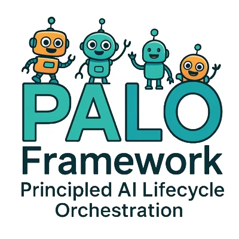

Continue your case
Customer Support Copilot
03 / 06
Assess68% readiness
68
- Frame
- Classify
- 3Assess
- 4Control
- 5Measure
- 6Prove
G3
Current decision gate

Wednesday · 15 July
One decision gate needs your attention today.
Continue your case
Current decision gate
Priority queue
Preliminary assessment
Stored locally on this device. PALO supports accountable decisions; it does not certify compliance.
Portfolio
Track ownership, gates and evidence readiness.
No cases match this search.
Current phase · 03 Assess
Internal assistant that drafts support replies from approved knowledge sources. A human agent reviews every response.
Complete the FRIA note and confirm escalation authority before review.
Rationale
Required for Gate 3
Mitigation
Audit trail
Portable Case File
Versioned local handoff for PALO Web · schema 1.0
Local vault
Readiness across 3 active cases.
Evidence readiness
Methods & tools
Use the lifecycle to find the right instrument.
No tools match this search.
Offline-first capture
Choose how to add a local artifact to the current case.
Stored locally on this device
Gate 03 · Assess
Profile & trust
Assessment data stays in this local prototype. No analytics or external service calls.
PALO supports governance preparation and accountable review. It does not provide legal advice, certify compliance, or replace responsible owners.
Product boundary
PALO structures governance work across Frame, Classify, Assess, Control, Measure and Prove & Review.
Outputs remain preliminary until verified by accountable owners against applicable sources and organizational controls.
PALO Mobile
Case File schema 1.0 · Evidence Bundle schema 1.0
Designed for mobile ↔ Web interoperability.
Find your PALO path
Choose the intent that best describes your next governance decision.
Case context
This creates the minimum context needed to recommend a starting route.
Recommended starting route
Based on your intent and context, PALO recommends:
Define purpose, users, scope, owners and assumptions before classification.
This case will be stored locally on this device and can later be prepared as a portable Case File.
Case created locally
Your recommended route and first decision gate have been added to Today.